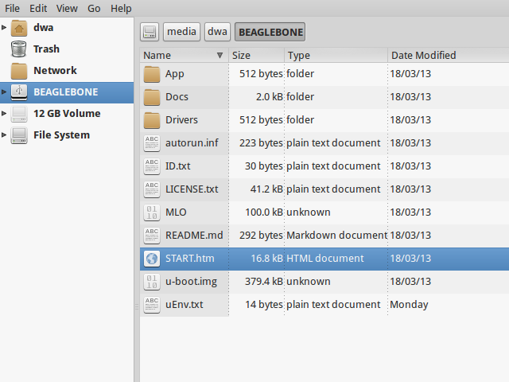
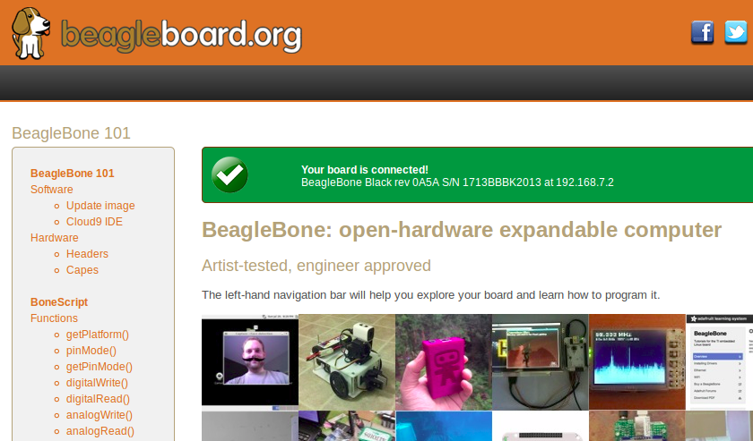

Raspberry Pi, Arduino, OpenWRT on routers ... Happy days are here for open source on little computers! Five years ago BeagleBoard.org released its first hacker-friendly ARM-powered development board and now I am having fun exploring their brand new BeagleBone Black - a $45 community-supported Linux computer.
Step 0 - Out-of-Box
The original BeagleBone - released near the end of 2011 - started with the idea of making an ARM board that would fit in a small mint tin and see how much awesomesauce could be packed inside! BeagleBone Black (BBB) has the same convenient size, rounded corners, and 4 mounting holes for building projects. Onboard is a 1GHz ARMv7 processor, 512MB RAM, 2GB storage, microSD slot, a microUSB port for power and connectivity, a USB host port, microHDMI, 5V power connector, and - as I am having fun exploring - 96 header pins for interfacing BBB with external hardware. A microUSB-to-USB cable is included for connecting BBB to a host machine.
BeagleBone Black is completely open source ... hardware schematics are provided (build your own!), no binary blobs, no NDA required to dive into the 4,000+ pages(!) of Texas Instruments' AM335x processor manual. BBB ships with the Angstrom Linux distribution pre-installed ... but using an ARMv7 processor is a big plus because alternative ARM ports of the mainstream Linux distros (such as Debian) are available for the BBB without re-compiling packages. BBB is also one of the first ARM devices to fully embrace the Linux Device Tree and will benefit from ongoing ARM improvements in mainstream kernel development and make it easier to create expansion boards (or capes in BBB lingo) for the device.
Step 1 - Connect to Host
BeagleBone Black is designed to get the Linux user up-and-running quickly. Within a few minutes of unboxing the device I was using the provided USB cable to connect the device to my host computer (running Debian sid). BBB mounts as a usb-storage device and provides a usbnet virtual-ethernet interface running a DHCP server.
Some post-connection HOST output of interest ...
$ cat /var/log/kern.log
Sep 1 16:58:17 kambei kernel: [455195.036280] usb 1-1.2: new high-speed USB device number 20 using ehci-pci
Sep 1 16:58:18 kambei kernel: [455195.129344] usb 1-1.2: New USB device found, idVendor=1d6b, idProduct=0104
Sep 1 16:58:18 kambei kernel: [455195.129350] usb 1-1.2: New USB device strings: Mfr=2, Product=3, SerialNumber=4
Sep 1 16:58:18 kambei kernel: [455195.129355] usb 1-1.2: Product: BeagleBoneBlack
Sep 1 16:58:18 kambei kernel: [455195.129358] usb 1-1.2: Manufacturer: Circuitco
Sep 1 16:58:18 kambei kernel: [455195.129361] usb 1-1.2: SerialNumber: 5A-1713BBBK2013
Sep 1 16:58:18 kambei kernel: [455195.133166] rndis_host 1-1.2:1.0 eth1: register 'rndis_host' at usb-0000:00:1a.0-1.2, RNDIS device, c8:a0:30:ac:1d:6f
Sep 1 16:58:18 kambei kernel: [455195.133843] cdc_acm 1-1.2:1.2: This device cannot do calls on its own. It is not a modem.
Sep 1 16:58:18 kambei kernel: [455195.133917] cdc_acm 1-1.2:1.2: ttyACM0: USB ACM device
Sep 1 16:58:18 kambei kernel: [455195.135249] usb-storage 1-1.2:1.4: USB Mass Storage device detected
Sep 1 16:58:18 kambei kernel: [455195.135458] scsi20 : usb-storage 1-1.2:1.4
Sep 1 16:58:19 kambei kernel: [455196.133604] scsi 20:0:0:0: Direct-Access Linux File-CD Gadget 0308 PQ: 0 ANSI: 2
Sep 1 16:58:19 kambei kernel: [455196.134045] sd 20:0:0:0: Attached scsi generic sg1 type 0
Sep 1 16:58:19 kambei kernel: [455196.135313] sd 20:0:0:0: [sdb] 144522 512-byte logical blocks: (73.9 MB/70.5 MiB)
Sep 1 16:58:19 kambei kernel: [455196.136080] sd 20:0:0:0: [sdb] Write Protect is off
Sep 1 16:58:19 kambei kernel: [455196.136089] sd 20:0:0:0: [sdb] Mode Sense: 0f 00 00 00
Sep 1 16:58:19 kambei kernel: [455196.136840] sd 20:0:0:0: [sdb] Write cache: enabled, read cache: enabled, doesn't support DPO or FUA
Sep 1 16:58:19 kambei kernel: [455196.147108] sdb:
Sep 1 16:58:19 kambei kernel: [455196.149998] sd 20:0:0:0: [sdb] Attached SCSI removable disk
$ lsusb
Bus 001 Device 020: ID 1d6b:0104 Linux Foundation Multifunction Composite Gadget
$ mount
/dev/sdb on /media/dwa/BEAGLEBONE type vfat (rw,nosuid,nodev,relatime,uid=1000,gid=1000,fmask=0022,dmask=0077,codepage=437,iocharset=utf8,shortname=mixed,showexec,utf8,flush,errors=remount-ro,uhelper=udisks2)
$ ls /dev/ttyA*
crw-rw---T 1 root dialout 166, 0 Aug 18 13:30 /dev/ttyACM0
$ ifconfig
eth0 Link encap:Ethernet HWaddr f0:de:f1:15:e8:51
inet addr:192.168.1.4 Bcast:192.168.1.255 Mask:255.255.255.0
inet6 addr: fe80::f2de:f1ff:fe15:e851/64 Scope:Link
UP BROADCAST RUNNING MULTICAST MTU:1500 Metric:1
RX packets:22559530 errors:0 dropped:0 overruns:0 frame:0
TX packets:21337616 errors:0 dropped:0 overruns:0 carrier:0
collisions:0 txqueuelen:1000
RX bytes:28619436829 (26.6 GiB) TX bytes:3283938274 (3.0 GiB)
Interrupt:20 Memory:f2500000-f2520000
eth1 Link encap:Ethernet HWaddr c8:a0:30:ac:1d:6f
inet addr:192.168.7.1 Bcast:192.168.7.3 Mask:255.255.255.252
inet6 addr: fe80::caa0:30ff:feac:1d6f/64 Scope:Link
UP BROADCAST RUNNING MULTICAST MTU:1500 Metric:1
RX packets:35 errors:0 dropped:0 overruns:0 frame:0
TX packets:83 errors:0 dropped:0 overruns:0 carrier:0
collisions:0 txqueuelen:1000
RX bytes:6572 (6.4 KiB) TX bytes:18103 (17.6 KiB)
I use the Thunar file manager to browse the device and click on START.htm to launch BeagleBone's Getting Started page in a web browser.
Scroll down to Step #3: Browse to your board and clicking on the address of BBB's web server 192.168.7.2 opens the onboard documentation BeagleBone 101.
Also included is a link to a self-hosted instance of the Cloud9 IDE listening at 192.168.7.2:3000 that provides a JavaScript library called BoneScript for hacking on the BeagleBone's hardware. Some tiny example scripts are provided to blink LEDs and whatnot ... at first glance they remind me of Arduino code but I haven't really played with this environment (or Arduino for that matter) much yet.
Network-Manager auto-creates a second wired interface for the BeagleBone Black on my HOST ... allowing me to ssh into the device as root@192.168.7.2 or root@beaglebone.local (Angstrom runs Avahi daemon by default) and no password. Will definitely need to change that ... but not before ...
Step 2 - Flashing updated Angstrom image
Having determined the device is working - and before diving into custom configuration - its a good idea to flash an updated Angstrom image for the BeagleBone Black to the device's onboard eMMC storage. This will require a microSD (8GB+) card and a 5V power adapter.
Download and unpack image
Angstrom image files for the BBB are labelled BBB-eMMC-flasher-xxxx.xx.xx.img.xz ... Latest version as of 2 September is BBB-eMMC-flasher-2013.08.21.img.xz.
Using the above image as an example ... download the xz-utils Debian package and download and unpack the Angstrom image ...
$ sudo apt-get install xz-utils
$ wget -c http://dominion.thruhere.net/koen/angstrom/beaglebone/BBB-eMMC-flasher-2013.08.21.img.xz
$ xz -d BBB-eMMC-flasher-2013.08.21.img.xz
Copy image to microSD
WARNING! Be careful to note the proper DeviceID of your microSD card ... in my example I use sdb but your device will probably have a different address. Command dd will completely wipe out the contents of the card. Its not nicknamed disk destroyer for nothing!
Copy image to card using dd ...
$ sudo dd if=BBB-eMMC-flasher-2013.08.21.img of=/dev/sdb bs=1M
Flash the BBB
A USB port does not supply enough power to the BBB when flashing an image to the eMMC ... the board must be connected to a 5V adapter. Luckily I was able to recycle an old Linksys power adapter that provided the necessary 5V and 2000mA and fit the power plug on the BBB.
With the BBB disconnected from HOST and powered off ... insert the Angstrom-prepared microSD card into BBB. Hold down the BOOT button (located above the microSD slot), connect the 5V adapter, and wait until you see the bank of 4 LEDs on the BBB all light up for a few seconds before releasing BOOT. A new image is now being flashed from card to BBB storage and will take approximately 50-60 minutes. Upon completion all 4 LEDs will be lit solid. Disconnect power, remove the microSD, then restore power and BBB will boot into the updated Angstrom.
Step 3 - Configuration
Root password
Root with no password oh noooooo ... set one now passwd.
You might also want to create an unprivileged user account (I did not).
Configure HOST as router
Tip from http://shallowsky.com/blog/hardware/talking-to-beaglebone.html
When BBB is connected to my HOST via USB ... Network-Manager sets up a second wired interface eth1 to connect with BBB ... and BBB connects to HOST through usb0 ...
$ ifconfig
...
usb0 Link encap:Ethernet HWaddr BA:E1:A2:37:43:15
inet addr:192.168.7.2 Bcast:192.168.7.3 Mask:255.255.255.252
UP BROADCAST RUNNING MULTICAST MTU:1500 Metric:1
RX packets:7685 errors:0 dropped:0 overruns:0 frame:0
TX packets:12461 errors:0 dropped:0 overruns:0 carrier:0
collisions:0 txqueuelen:1000
RX bytes:888859 (868.0 KiB) TX bytes:13309157 (12.6 MiB)
This arrangement is OK for getting HOST and BBB talking to each other but BBB - in lieu of an additional ethernet cable - cannot reach the net. I created a tiny script that can be run as desired to configure my Linux HOST to route internet traffic for the BBB ...
#!/bin/bash
# bbbIPforward.sh -- Enable internet access for my BeagleBone Black (BBB)
# using my Linux HOST as a router
bbbAddr="192.168.7.2"
hostAddr="192.168.7.1"
# Configure IP forwarding on HOST
sudo iptables -A POSTROUTING -t nat -j MASQUERADE
echo 1 | sudo tee /proc/sys/net/ipv4/ip_forward > /dev/null
# Copy ssh key to BBB for passwordless logins
ssh-copy-id root@$bbbAddr
# Configure BBB to use HOST as gateway
ssh root@$bbbAddr "/sbin/route add default gw $hostAddr"
# Backup and substitute BBB resolv.conf with HOST resolv.conf
ssh root@$bbbAddr "mv -n /etc/resolv.conf /etc/resolv.conf.bak"
scp /etc/resolv.conf root@$bbbAddr:/etc/
Date and Time
Tip from http://derekmolloy.ie/automatically-setting-the-beaglebone-black-time-using-ntp/
The BeagleBone Black does not include an onboard Real Time Clock (RTC) and thus loses its time and date setting after every power off.
Set the time over the internet using an NTP server by first configuring the timezone linking localtime to your proper location in zoneinfo (in my case Toronto/New York) and then running a quick one-off command to set the proper date ...
# ln -s /usr/share/zoneinfo/America/New_York /etc/localtime
# ntpdate -u pool.ntp.org
... but the date/time will still be lost after every shutdown.
For a more permanent solution install NTP ...
# opkg update
# opkg install ntp
Find local NTP servers (Canada) and edit /etc/ntp.conf ...
driftfile /etc/ntp.drift
logfile /var/log/ntpd.log
# NTP Servers for Canada from www.pool.ntp.org
server 0.ca.pool.ntp.org
server 1.ca.pool.ntp.org
server 2.ca.pool.ntp.org
server 3.ca.pool.ntp.org
# Using local hardware clock as fallback
# Disable this when using ntpd -q -g -x as ntpdate or it will sync to itself
# server 127.127.1.0
# fudge 127.127.1.0 stratum 14
# Defining a default security setting
restrict 192.168.1.0 mask 255.255.255.0 nomodify notrap
Note
Angstrom uses systemd and init.d is replaced by systemctl COMMAND and files are located in /lib/systemd/system/NAME.service.
Enable NTP services ...
# systemctl enable ntpdate.service
# systemctl enable ntpd.service
# cat /lib/systemd/system/ntpd.service
[Unit]
Description=Network Time Service
After=network.target
[Service]
Type=forking
PIDFile=/run/ntpd.pid
ExecStart=/usr/bin/ntpd -p /run/ntpd.pid
[Install]
WantedBy=multi-user.target
{% endhighlight %}
Modify ExecStart of /lib/systemd/system/ntpdate.service ....
[Unit]
Description=Network Time Service (one-shot ntpdate mode)
Before=ntpd.service
[Service]
Type=oneshot
ExecStart=/usr/bin/ntpd -q -g -x
ExecStart=/sbin/hwclock --systohc
RemainAfterExit=yes
[Install]
WantedBy=multi-user.target
Save all changes, reboot the BBB while connected to the Internet, and verify the proper date and time are set with timedatectl ...
# timedatectl
Local time: Wed 2013-07-10 23:14:45 EDT
Universal time: Thu 2013-07-11 03:14:45 UTC
RTC time: Wed 2013-07-10 23:14:45
Timezone: America/New_York (EDT, -0400)
NTP enabled: no
NTP synchronized: yes
RTC in local TZ: no
DST active: yes
Last DST change: DST began at
Sun 2013-03-10 01:59:59 EST
Sun 2013-03-10 03:00:00 EDT
Next DST change: DST ends (the clock jumps one hour backwards) at
Sun 2013-11-03 01:59:59 EDT
Sun 2013-11-03 01:00:00 EST
Reference: What is the best way to run ntpdate?
Remote Desktop
Tip from http://digitaldiner.blogspot.ca/2013/05/quick-hint-for-beaglebone-black-user.html
In lieu of a microHDMI cable for connecting an HDMI display to the BBB the device may be configured to transmit a remote desktop to HOST.
On BBB install the x11vnc package and launch ...
# opkg update
# opkg install x11vnc
# x11vnc -bg -o %HOME/.x11vnc.log.%VNCDISPLAY -auth /var/run/gdm/auth-for-gdm*/database -display :0 -forever
... which provides a display available for remote viewing at address 192.168.7.2:5900.
On my HOST I install and use the ssvnc viewer sudo apt-get install ssvnc.
It works!
Reference: http://www.karlrunge.com/x11vnc/
Step 4 - Issues and Fixes
BeagleBone Black Rev. A5A running default Angstrom Linux
'opkg upgrade'
Fix: Do not run this command or else Bad Things Will Happen.
No login screen over HDMI
Issue: BeagleBone logo appears at boot but no login screen.
Fix: Turns out that my powered USB hub - with keyboard attached - was not being detected by the BBB during boot. If the device thinks no keyboard or mouse is attached during boot it kills power to the microHDMI port and hence no display. You can "wake up" the display by ssh'ing into BBB and sending an echo 0 > /sys/class/graphics/fb0/blank command but it will still fail to detect a hot-plugged USB keyboard or mouse.
If I connect the keyboard (with built-in trackpoint) directly to the BBB USB port and reboot and hit SHIFT key the display springs to life and the login window appears.
Issue: BeagleBone logo appears at boot but no login screen (and this time its not the keyboard).
Fix: Creating a password for root causes the autologin task running at login screen to constantly fail (because it doesn't know the password) and buggers up the display. To disable autologin edit /etc/gdm/custom.conf and modify the line TimedLoginEnable from true to false ...
[daemon]
TimedLoginEnable=false
... and restart GDM with the command systemctl restart gdm.service.
Reference: http://circuitco.com/support/index.php?title=BeagleBoneBlack_HDMI
HDMI output goes beyond edge of display
Issue: Using a microHDMI-HDMI cable to connect BBB to my 1920x1200 display produces a working 1280x720 resolution working ... but the desktop area is slightly bigger than the margins of the display.
Fix: Needed to adjust settings on display ... modifying Image Setting->Video Mode->Video Mode to Image Setting->Video Mode->PC Mode
Reference: http://groups.google.com/forum/#!msg/beagleboard/sxaSIUpiZo8/__TmDqD4aJcJ
drm.debug
Issue: A whole pile of these messages were filling dmesg ...
[Mon Aug 26 03:34:00 2013] [drm:output_poll_execute], [CONNECTOR:5:HDMI-A-1] status updated from 2 to 2
... repeating every few seconds.
Fix: These debugging messages can safely be turned off by editing uEnv.txt located on the mmcblk0p1 partition (not the uEnv.txt found in boot).
If that partition is not auto-mounted (mine was not) then go ahead and mount it now ...
# mount /dev/mmcblk0p1 /media/BEAGLEBONE/
... and edit /media/BEAGLEBONE/uEnv.txt by changing the line optargs=quiet drm.debug=7 to simply optargs=quiet ... Reboot and issue resolved.
resolv.conf
Issue: Noticed an instance where after running opkg update internet access was broken and I was getting a pile of wget: bad address 'feeds.angstrom-distribution.org' errors ... ifconfig showed I still had a good connection to LAN.
Fix: Discovered that resolv.conf was pointing to 127.0.0.1. Modified file to my router's IP address ... ran update again and everything OK.
urxvt
Issue: Using urxvt as my terminal and ssh'ing into BBB ... some commands like htop will not run.
Fix: Copy /usr/share/terminfo/r/rxvt-unicode from HOST to the BBB and place in ~/.terminfo/r/rxvt-unicode. Same for rxvt-unicode-256color.
Reference: https://wiki.archlinux.org/index.php/Urxvt#Remote_Hosts
SSH session hangs
Issue: SSH session sometimes hangs when rebooting the BBB.
Fix: Type ~. and it should kill the SSH session.
Step 5 - Helpful Resources
- Purchase a BeagleBone Black: in my hometown (Toronto) from Creatron or online from Adafruit, Digikey and others
- BeagleBone Black wiki and forum and System Reference Manual
- BBB on the Embedded Linux Wiki and eewiki
- Hardware tutorials on Adafruit
- Excellent series of tutorials and videos by Derek Molloy ... his tables for the BBB's P8 and P9 header pins are essential if you play with the hardware
- Bonescript scripting tools
- Angstrom Linux package browser
- BBB and the 3.8 kernel and an introduction from Jason Kridner, co-founder of BeagleBoard.org